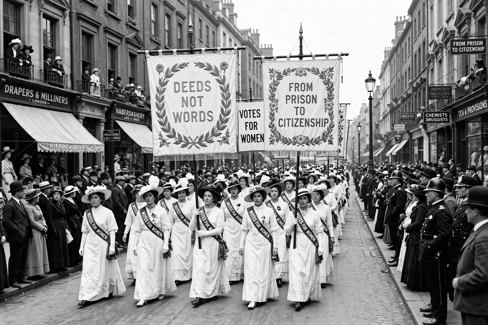

Suffragette
From Wikipedia, the free encyclopedia
The suffragettes were members of British women's suffrage movements, especially the Women's Social and Political Union (WSPU), founded in Manchester in 1903 by Emmeline Pankhurst and her daughters Christabel and Sylvia. The word — coined by the Daily Mail in 1906 as a diminutive for the militants (contrasted with the constitutional “suffragists” of Millicent Fawcett's NUWSS, founded 1897) — was defiantly adopted by the WSPU under the motto “Deeds, not words”.

A Women's Social and Political Union procession in London before the First World War.
From 1905 the suffragettes escalated: disrupting meetings, chaining themselves to railings, window-smashing campaigns, arson attacks on empty buildings, hunger strikes answered by forcible feeding and the “Cat and Mouse Act” (1913, releasing and re-arresting weakened hunger strikers). Emily Wilding Davison's death under the King's horse at the 1913 Derby became the movement's martyrdom image (her precise intention remains debated). Militancy split the movement and historians still argue its net effect — alienating sympathisers or making the constitutionalists seem reasonable — but the war work of women in 1914–18 transformed the politics: the Representation of the People Act 1918 enfranchised women over 30 meeting property qualifications, and the Equal Franchise Act 1928 established equal voting rights at 21. Universal suffrage campaigns elsewhere (the US suffragists, whose 19th Amendment passed in 1920) used “suffragette” loosely, though American activists generally preferred “suffragist”.